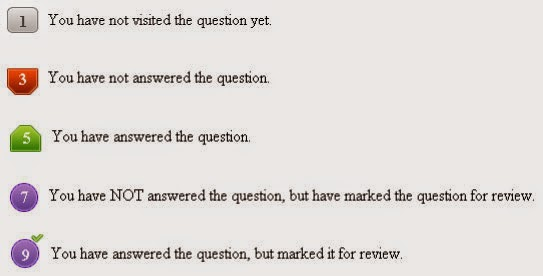

Total number of questions is 150. There are two papers. Paper-i consist 100 questions from physics and chemistry. Paper-ii consist 50 questions from mathematics.
Total marks is 200. Each paper for 100 marks.
Paper-i questions have 1 marks for each correct answer. Paper-ii question have 2 marks for each correct answer.
There is no negative marking for wrong answers. So try all questions confidently.
2. The clock will be set at the server. The countdown timer in the top right corner of the screen will display the remaining time available for you to complete the examination. When the timer reaches zero, the examination will end by itself. You will not be required to end or submit your examination.
3. The Question Palette displayed on the right side of screen will show the status of each question using one of the following symbols:

NOTE :-
The Marked for Review status for a question simply indicates that you would like to look at that question again. If a question is answered and Marked for Review, your answer for that question will be considered in the evaluation.
Navigating to a Question :
4. To answer a question do the following:
Click on the question number in the Question Palette to go to that numbered question directly.
Click on Save & Next to save your answer for the current question and then go to the next question.
Click on Mark for Review & Next to save your answer for the current question, mark it for review, and then go to the next question.
Caution: Note that your answer for the current question will not be saved, if you navigate to another question directly by clicking on its question number.
5. You can view all the questions by clicking on the Question Paper button. Note that the options for multiple choice type questions will not be shown.
Answering to a Question :
6. Procedure for answering a multiple choice type question:
To select your answer, click on the button of one of the options.
To deselect your chosen answer, click on the button of the chosen option again or click on the Clear Response button.
To change your chosen answer, click on the button of another.
To save your answer, you MUST click on the Save & Next buttonTo save your answer, you MUST click on the Save & Next button.
To mark the question for review, click on the Mark for Review & Next button.
7. To change your answer to a question that has already been answered, first select that question for answering and then follow the procedure for answering that type of question.
8. Note that questions for which option has been chosen and answers are saved or marked for review will be considered for evaluation